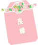

VOL.42
毎日をハッピーに過ごせるよう、神社やお寺へおでかけしませんか？
神秘的な雰囲気に包まれれば自然と背筋もピントします。
お参りしてランチしておみやげを買って...。パワーをたくさんもらいましょう！
くるまざきじんじゃ
車折神社
京都嵐山にある車折神社
金運・良縁・学問の神様を祀っており多くのアーティストも参拝に訪れます。
晴れた朝の境内は清々しい空気に満ちています。



きよみずでら
清水寺
東山の中腹にある清水寺は「清水の舞台」で知られる京都随一の観光寺です。
お寺へ続く産寧坂は京都らしい風情を感じさせ、
古き良き町並を楽しむことができます。